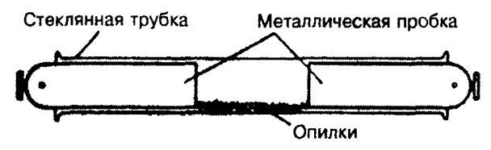
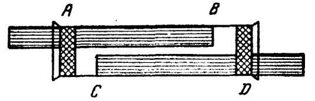
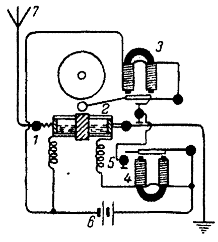

История беспроволочного телеграфа
Web-Quest
Ранняя история радиотелеграфа
Ранняя история радиотелеграфа
В 1891 году французский физик Эдуард Бранли открыл, что металлические опилки, помещенные в стеклянную трубочку, при пропускании через них электрического тока не всегда обнаруживают одинаковое сопротивление. При возникновении вблизи трубочки электромагнитных волн, например, от искры, полученной посредством катушки Румкорфа, сопротивление опилок быстро падало и восстанавливалось лишь после их легкого встряхивания. Бранли указал, что это их свойство можно использовать для обнаружения электромагнитных волн.
Когерер Бранли
В 1894 году английский физик Лодж впервые использовал трубку Бранли, которую он назвал "когерером" (от латинского coheare - сцепляться, связываться) для того, чтобы регистрировать прохождение электромагнитных волн. Это позволило увеличить дальность приема до нескольких десятков метров. Для восстановления чувствительности когерера после прохождения электромагнитных волн Лодж установил непрерывно действующий часовой механизм, который постоянно встряхивал его. Фактически Лоджу оставалось сделать только шаг, чтобы создать радиоприемник, но он этого шага не сделал. Впервые мысль о возможности применения электромагнитных волн для нужд связи была изложена русским инженером Поповым. Он указал, что передаваемым сигналам можно придать определенную длительность (например, одни сигналы сделать более длинными, другие - более короткими) и с помощью азбуки Морзе передавать без проводов депеши. Впрочем, устройство это имело смысл только в том случае, если бы удалось добиться устойчивой радиопередачи на большое расстояние. Изучив трубки Бранли и Лоджа, Попов принялся за разработку еще более чувствительного когерера. В конце концов ему удалось создать очень чувствительный когерер с платиновыми электродами, заполненный железными опилками.
Когерер Попова
Следующей проблемой явилось усовершенствование процесса встряхивания опилок после их слипания, вызванного прохождением электромагнитной волны. Часовой механизм, применявшийся Лоджем для восстановления чувствительности когерера, не обеспечивал надежного действия схемы: такое встряхивание было беспорядочным и могло привести к пропуску сигналов. Попов искал автоматический метод, который бы позволил восстанавливать чувствительность когерера только после того, как сигнал принят. Проделав много опытов, Попов изобрел способ периодического встряхивания когерера с помощью молоточка электрического звонка и применил электрическое реле для включения цепи этого звонка. Схема, разработанная Поповым, обладала большой чувствительностью, и уже в 1894 году ему удалось с ее помощью принимать сигналы на расстоянии нескольких десятков метров. Во время этих опытов Попов обратил внимание на то, что дальность действия приемника заметно увеличивается, если присоединить к когереру вертикальный провод. Так была изобретена приемная антенна, использовав которую Попов внес существенные улучшения в условия работы приемника. К 1895 году он создал прибор, который представлял собой первый в истории радиоприемник. Этот радиоприемник был устроен следующим образом. Чувствительная трубка с металлическими опилками (когерер) укреплялась в горизонтальном положении; к одному выводу трубки присоединялся отрезок проволоки, представлявший собой приемную антенну, а к другому концу - заземленный провод. Электрическая цепь батареи замыкалась через когерер и электромагнитное реле: вследствие большого сопротивления опилок в трубке (до 100000 Ом) ток в цепи батареи был недостаточен для притяжения якоря реле. Но как только трубка подвергалась действию электромагнитных волн, опилки слипались, и сопротивление трубки значительно уменьшалось. Ток в цепи возрастал, и якорь реле притягивался. При этом происходило замыкание второй цепи, и ток направлялся через обмотки звонкового реле, в результате чего звонок приходил в действие. Молоточек ударял по звонку, при этом цепь размыкалась. Молоточек возвращался в исходное положение под действием пружины и ударял по трубке, встряхивая опилки. Таким образом, трубка вновь делалась чувствительна к электромагнитным волнам.

1 - зажимы, между которыми укреплялся когерер; 2, 3 - звонковое реле; 4 - электромагнитное реле; 5 - контакт, замыкавший цепь батарея - звонковое реле; 6 - батарея; 7 - антенна
7 мая 1895 года Попов демонстрировал работу своего радиоприемника во время доклада на заседании Русского физико-химического общества. Источником электромагнитных колебаний в его опытах служил передающий вибратор Герца, только в передатчике Попова искровой разрядник включался между антенной и землей. В январе 1896 года в журнале этого общества была опубликована статья Попова с описанием его приемника. Затем Попов присоединил к своей схеме телеграфный аппарат Морзе и ввел запись на ленту. В результате получился первый в мире радиотелеграф - передатчик и приемник с записью сигналов по азбуке Морзе.